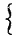

A Latin Grammar
By Charles E. Bennett
Goldwin Smith Professor of Latin in Cornell University
Quicquid praecipies, esto brevis. ut cito dicta
Percipiant animi dociles teneantque fideles:
Omne supervacuum pleno de pectore manat.
— [Horace, De Arte Poetica, ll. 335-337.]
Allyn and Bacon
Boston and Chicago
Revised Edition: March 1913.
Preface.
The present book is a revision of my Latin Grammar originally published in 1895. Wherever greater accuracy or precision of statement seemed possible, I have endeavored to secure this. The rules for syllable division have been changed and made to conform to the prevailing practice of the Romans themselves. In the Perfect Subjunctive Active, the endings -īs, -īmus, -ītis are now marked long. The theory of vowel length before the suffixes -gnus, -gna, -gnum, and also before j, has been discarded. In the Syntax I have recognized a special category of Ablative of Association, and have abandoned the original doctrine as to the force of tenses in the Prohibitive.
Apart from the foregoing, only minor and unessential modifications have been introduced. In its main lines the work remains unchanged.
C. E. B.
Ithaca, New York,
October 16, 1907.
From the Preface to the First Edition.
The object of this book is to present the essential facts of Latin grammar in a direct and simple manner, and within the smallest compass consistent with scholarly standards. While intended primarily for the secondary school, it has not neglected the needs of the college student, and aims to furnish such grammatical information as is ordinarily required in undergraduate courses.
The experience of German educators in recent years has tended to restrict the size of school-grammars of Latin, and has demanded an incorporation of the main principles of the language in compact manuals of 250 pages.1 Within the past decade, several grammars of this scope have appeared which have amply met the exacting demands of the full Gymnasial Latin course, — a period of study representing quite as much reading as that covered by the average American undergraduate.
The publication in this country of a grammar of similar plan and scope seems fully justified at the present time, as all recent editions of classic texts summarize in introductions the special idioms of grammar and style peculiar to individual authors. This makes it feasible to dispense with the enumeration of many minutiae of usage which would otherwise demand consideration in a student's grammar.
In the chapter of Prosody, I have designedly omitted all special treatment of the lyric metres of Horace and Catullus, as well as of the measures of the comic poets. Our standard editions of these authors all give such thorough consideration to versification that repetition in a separate place seems superfluous.
Ithaca, New York,
December 15, 1894.
1 One of the most eminent of living Latinists, Professor Eduard Wölfflin, of Munich, has expressed the opinion that the essentials may be given within even smaller compass than this. See his Preface to the Schmalz-Wagener Lateinische Grammatik, 1891.
Part I
Sounds, Accent, Quantity
The Alphabet
§1
The Latin Alphabet is the same as the English, except that the Latin has no w.
- K occurs only in Kalendae and a few other words; y and z were introduced from the Greek about 50 B.C., and occur only in foreign words — chiefly Greek.
- With the Romans, who regularly employed only capitals, I served both as vowel and consonant; so also V. For us, however, it is more convenient to distinguish the vowel and consonant sounds, and to write i and u for the former, j and v for the latter. Yet some scholars prefer to employ i and u in the function of consonants as well as vowels.
Classification of Sounds
§2
- The Vowels are a, e, i, o, u, y. The other letters are Consonants. The Diphthongs are ae, oe, ei, au, eu, ui.
- Consonants are further subdivided into Mutes, Liquids, Nasals, and Spirants.
- The Mutes are p, t, c, k, q; b, d, g; ph, th, ch. Of these, —
- p, t, c, k, q are voiceless,1 i.e. sounded without voice or vibration of the vocal cords.
- b, d, g,2 i.e. sounded with vibration of the vocal cords.
- ph, th, ch are aspirates. These are confined almost exclusively to words derived from the Greek, and were equivalent to p + h, t + h, c + h, i.e. to the corresponding voiceless mutes with a following breath, as in Eng. loop-hole, hot-house, block-house.
- The Mutes admit of classification also as
| Labials, | p, b, ph. |
| Dentals (or Linguals), | t, d, th. |
| Gutturals (or Palatals), | c, k, q, g, ch. |
- The Liquids are l, r. These sounds were voiced.
- The Nasals are m, n. These were voiced. Besides its ordinary sound, n, when followed by a guttural mute, also had another sound, — that of ng in sing, — the so-called n adulterīnum; as, —
| anceps, double, pronounced angceps. |
- The Spirants (sometimes called Fricatives) are f, s, h. These were voiceless.
- The Semivowels are j and v. These were voiced.
- Double Consonants are x and z. Of these, x was equivalent to cs, while the equivalence of z is uncertain. See § 3.3.
- The following table will indicate the relations of the consonant sounds: —
| | Voiceless. | Voiced. | Aspirates. | |
| Mutes, |  | p, | b, | ph, | (Labials). |
| t, | d, | th, | (Dentals). |
| c, k, q, | g, | ch, | (Gutturals). |
| Liquids, | | l, r, | |
| Nasals, | | m, n, | |
| Spirants, | | f, | | (Labial). |
| s, | | (Dental). |
| h, | | (Guttural). |
| Semivowels, | | j, v. | |
- The Double Consonants, x and z, being compound sounds, do not admit of classification in the above table.
1 For 'voiceless,' 'surd,' 'hard,' or 'tenuis' are sometimes used.
2 For 'voiced,' 'sonant,' 'soft,' or 'media' are sometimes used.
Sounds of the Letters
§3
The following pronunciation (often called Roman) is substantially that employed by the Romans at the height of their civilization; i.e. roughly, from 50 B.C. to 50 A.D.
- Vowels.
| ā as in father; | ă as in the first syllable of a-ha! |
| ē as in they; | ĕ as in met; |
| ī as in machine; | ĭ as in pin; |
| ō as in note; | ŏ as in obey, melody; |
| ū as in rude; | ŭ as in put; |
| y like French u, German ü. |
- Diphthongs.
| ae like ai in aisle; | eu with its two elements, ĕ and ŭ pronounced in rapid succession; |
| oe like oi in oil. |
| ei as in rein; | ui occurs almost exclusively in cui and huic. These words are pronounced as though written kwee and wheek. |
| au like ow in how; |
- Consonants.
b, d, f, h, k, l, m, n, p, qu are pronounced as in English, except that bs, bt are pronounced ps, pt.
c is always pronounced as k.
t is always a plain t, never with the sound of sh as in Eng. oration.
g always as in get; when ngu precedes a vowel, gu has the sound of gw, as in anguis, languidus.
j has the sound of y as in yet.
r was probably slightly trilled with the tip of the tongue.
s always voiceless as in sin; in suādeō, suāvis, suēscō, and in compounds and derivatives of these words, su has the sound of sw.
v like w.
x always like ks; never like Eng. gz or z.
z uncertain in sound; possibly like Eng. zd, possibly like z. The latter sound is recommended.
The aspirates ph, ch, th were pronounced very nearly like our stressed Eng. p, c, t — so nearly so, that, for practical purposes, the latter sounds suffice.
Doubled letters, like ll, mm, tt, etc., should be so pronounced that both members of the combination are distinctly articulated.
Syllables
§4
There are as many syllables in a Latin word as there are separate vowels and diphthongs.
In the division of words into syllables, —
- A single consonant is joined to the following vowel; as, vo-lat, ge-rit, pe-rit, a-dest.
- Doubled consonants, like tt, ss, etc., are always separated; as, vit-ta, mis-sus.
- Other combinations of two or more consonants are regularly separated, and the first consonant of the combination is joined with the preceding vowel; as, ma-gis-trī, dig-nus, mōn-strum, sis-te-re.
- An exception to Rule 3 occurs when the two consonants consist of a mute followed by l or r (pl, cl, tl; pr, cr, tr, etc.). In such cases both consonants are regularly joined to the following vowel; as, a-grō, vo-lu-cris, pa-tris, mā-tris. Yet if the l or r introduces the second part of a compound, the two consonants are separated; as, ab-rumpō, ad-lātus.
- The double consonant x is joined to the preceding vowel; as, ax-is, tēx-ī.
Quantity
§5
- Quantity of Vowels.
A vowel is long or short according to the length of time required for its pronunciation. No absolute rule can be given for determining the quantity of Latin vowels. This knowledge must be gained, in large measure, by experience; but the following principles are of aid: —
- A vowel is long,1 —
- before nf or ns; as, īnfāns, īnferior, cōnsūmō, cēnseō, īnsum.
- when the result of contraction; as, nīlum for nihilum.
- A vowel is short, —
- before nt, nd; as, amant, amandus. A few exceptions occur in compounds whose first member has a long vowel; as, nōndum (nō dum).
- before another vowel, or h; as, meus, trahō. Some exceptions occur, chiefly in proper names derived from Greek; as, Aenēās.
- Quantity of Syllables.
Syllables are distinguished as long or short according to the length of time required for their pronunciation.
- A syllable is long,2 —
- if it contains a long vowel; as, māter, rēgnum, dī.
- if it contains a diphthong; as, causae, foedus.
- if it contains a short vowel followed by x, z, or any two consonants (except a mute with l or r); as, axis, gaza, restō.
- A syllable is short, if it contains a short vowel followed by a vowel or by a single consonant; as, mea, amat.
- Sometimes a syllable varies in quantity, viz. when its vowel is short and is followed by a mute with l or r, i.e. by pl, cl, tl; pr, cr, tr, etc.; as, ăgrī, volŭcris.3 Such syllables are called common. In prose they were regularly short, but in verse they might be treated as long at the option of the poet.
NOTE. — These distinctions of long and short are not arbitrary and artificial, but are purely natural. Thus, a syllable containing a short vowel followed by two consonants, as ng, is long, because such a syllable requires more time for its pronunciation; while a syllable containing a short vowel followed by one consonant is short, because it takes less time to pronounce it. In case of the common syllables, the mute and the liquid blend so easily as to produce a combination which takes scarcely more time than a single consonant. Yet by separating the two elements (as ag-rī) the poets were able to use such syllables as long.
1 In this book, long vowels are indicated by a horizontal line above them; as, ā, ī, ō, etc. Vowels not thus marked are short. Occasionally a curve is set above short vowels; as, ĕ, ŭ.
2 To avoid confusion, the quantity of syllables is not indicated by any sign.
3 But if the l or r introduces the second part of a compound, the preceding syllable is always long; as, abrumpō.
Accent
§6
- Words of two syllables are accented upon the first; as, tégit, mṓrem.
- Words of more than two syllables are accented upon the penult (next to the last) if that is a long syllable, otherwise upon the antepenult (second from the last); as, amā́vī, amántis, míserum.
- When the enclitics -que, -ne, -ve, -ce, -met, -dum are appended to words, if the syllable preceding the enclitic is long (either originally or as a result of adding the enclitic) it is accented; as, miserṓque, hominísque. But if the syllable still remains short after the enclitic has been added, it is not accented unless the word originally took the accent on the antepenult. Thus, pórtaque, but míseráque.
- Sometimes the final -e of -ne and -ce disappears, but without affecting the accent; as, tantṓn, istī́c, illū́, vidén (for vidḗsne).
- In utrắque, each, and plērắque, most, -que is not properly an enclitic; yet these words accent the penult, owing to the influence of their other cases, — utérque, utrúmque, plērúmque.
Vowel Changes1
§7
- In Compounds, —
- ĕ before a single consonant becomes ĭ; as, —
- ă before a single consonant becomes ĭ; as, —
- ă before two consonants becomes ĕ; as, —
- ae becomes ī; as, —
- au becomes ū, sometimes ō; as, —
| conclūdō for con-claudō; |
| explōdō for ex-plaudō |
- Contraction. Concurrent vowels were frequently contracted into one long vowel. The first of the two vowels regularly prevailed; as, —
| trēs for tre-es; | cōpia for co-opia; |
| mālō for ma(v)elō; | cōgō for co-agō; |
| amāstī for amā(v)istī; | cōmō for co-emō |
| dēbeō for dē(h)abeō; | jūnior for ju(v)enior. |
| nīl for nihil; |
- Parasitic Vowels. In the environment of liquids and nasals a parasitic vowel sometimes develops; as, —
| vinculum for earlier vinclum. |
So perīculum, saeculum.
- Syncope. Sometimes a vowel drops out by syncope; as, —
| ārdor for āridor (compare āridus); |
| valdē for validē (compare validus). |
1 Only the simplest and most obvious of these are here treated.
Part II
Inflexions
Part III
Particles
Part IV
Word Formation
Part V
Syntax
Chapter 1 - Sentences
Classification of Sentences
Form of Interrogative Sentences
Subject and Predicate
Simple and Compound Sentences
Chapter 2 - Syntax of Nouns
Subject
Predicate Nouns
Appositives
The Cases
The Nominative
The Vocative
The Accusative
Accusative of the Person or Thing Affected
Accusative of the Result Produced
Two Accusatives - Direct Object and Predicate Accusative
Two Accusatives - Person and Thing
Two Accusatives with Compounds
Synecdochical (or Greek) Accusative
Accusative of Time and Space
Accusative of Limit of Motion
Accusative in Exclamations
Accusative as Subject of the Infinitive
Other Uses of the Accusative
The Dative
Dative of Indirect Object
Dative of Reference
Dative of Agency
Dative of Possession
Dative of Purpose or Tendency
Dative with Adjectives
Dative of Direction
The Genitive
Genitive with Nouns
Genitive with Adjectives
Genitive with Verbs
Meminī, Reminīscor, Oblīvīscor
Admoneō, Commoneō, Commonefaciō
Verbs of Judicial Action
Genitive with Impersonal Verbs
Interest, Rēfert
Genitive with Other Verbs
The Ablative
Genuine Ablative Uses
Ablative of Separation
Ablative of Source
Ablative of Agent
Ablative of Comparison
Instrumental Uses of the Ablative
Ablative of Means
Ablative of Cause
Ablative of Manner
Ablative of Attendant Circumstance
Ablative of Accompaniment
Ablative of Association
Ablative of Degree of Difference
Ablative of Quality
Ablative of Price
Ablative of Specification
Ablative Absolute
Locative Uses of the Ablative
Ablative of Place
A. Place Where
B. Place From Which
Ablative of Time
A. Time at Which
B. Time Within Which
The Locative
Chapter III - Syntax of Adjectives
Agreement of Adjectives
A. Agreement as to Number
B. Agreement as to Gender
Adjectives Used Substantively
Adjectives with the Force of Adverbs
Comparatives and Superlatives
Other Peculiarities
Chapter IV - Syntax of Pronouns
Personal Pronouns
Possessive Pronouns
Reflexive Pronouns
Reciprocal Pronouns
Demonstrative Pronouns
Hīc, Ille, Iste
Is
Īdem
Ipse
Relative Pronouns
Indefinite Pronouns
Pronominal Adjectives
Chapter V - Syntax of Verbs
Agreement
With One Subject
With Two or More Subjects
Voices
Tenses
Tenses of the Indicative
Principal and Historical Tenses
Presesnt Indicative
Imperfect Indicative
Future Indicative
Perfect Indicative
Pluperfect Indicative
Future Perfect Indicative
Epistolary Tenses
Tenses of the Subjunctive
Sequence of Tenses
Peculiarities of Sequence
Method of Expressing Future Time in the Subjunctive
Tenses of the Infinitive
The Moods
Moods in Independent Sentences
The Indicative in Independent Sentences
The Subjunctive in Independent Sentences
Volitive Subjunctive
A. Hortatory Subjunctive
B. Jussive Subjunctive
C. Prohibitive Subjunctive
D. Deliberative Subjunctive
E. Concessive Subjunctive
Optative Subjunctive
Potential Subjunctive
The Imperative
Moods in Dependent Clauses
Clauses of Purpose
Clauses of Characteristic
Clauses of Result
Causal Clauses
Temporal Clauses introduced by Postquam, Ut, Ubi, Simul ac, etc
Temporal Clauses Introduced by Cum
A. Cum Referring to the Past
B. Cum Referring to the Present or Future
C. Other Uses of Cum
Clauses Introduced by Antequam and Priusquam
A. With the Indicative
B. With the Subjunctive
Clauses Introduced By Dum, Donec, Quoad
Substantive Clauses
A. Substantive Clauses Developed from the Volitive
B. Substantive Clauses Developed from the Optative
C. Substantive Clauses of Result
D. Substantive Clauses Introduced by Quīn
E. Substantive Clauses Introduced by Quod
F. Indirect Questions
Conditional Sentences
First Type - Nothing Implied as to the Reality of the Supposed Case
Second Type - 'Should'-'Would' Conditions
Third Type - Supposed Case Represented as Contrary to Fact
Protasis Expressed Without Sī
Use of Nisi, Sī Nōn, Sīn.
Conditional Clauses of Comparison
Concessive Clauses
Adversative Clauses with Quamvī, Quamquam, etc.
Clauses with Dum, Modo, Dummodo, Denoting a Wish or a Proviso
Relative Clauses
Indirect Discourse (ōrātiō Oblīqua)
Moods in Indirect Discourse
Declarative Sentences
Interrogative Sentences
Imperative Sentences
Tenses in Indirect Discourse
A. Tenses of the Infinitive
B. Tenses of the Subjunctive
Conditional Sentences in Indirect Discourse
Conditional Sentences of the First Type
Conditional Sentences of the Second Type
Conditional Sentences of the Third Type
Implied Indirect Discourse
Subjunctive by Attraction
Noun and Adjective Forms of the Verb
The Infinitive
Infinitive without Subject Accsuative
A. As Subject
B. As Object
Infinitive with Subject Accusative
A. As Subject
B. As Object
Passive Construction of the Foregoing Verbs
Infinitive with Adjectives
Infinitive in Exclamations
Historical Infinitive
Participles
Tenses of the Participle
Use of Participles
The Gerund
Gerundive Construction instead of the Gerund
The Supine
Chapter VI - Particles
Coördinate Conjunctions
Adverbs
Chapter VII - Word-Order and Sentence-Structure
A. Word-Order
Special Principles
A. Sentence-Structure
Chapter VIII - Hints on Latin Style
Nouns
Adjectives
Pronouns
Verbs
Peculiarities in the Use of the Accusative
Peculiarities in Connection with the Use of the Dative
Peculiarities in the Use of the Genitive
Part VI
Prosody
§360
Prosody treats of metres and versification.
§361
Latin Verse. Latin Poetry was essentially different in character from English. In our own language, poetry is based upon accent, and poetical form consists essentially in a certain succession of accented and unaccented syllables. Latin poetry, on the other hand, was based not upon accent, but upon quantity, so that with the Romans poetical form consisted in a certain succesion of long and short syllables, i.e. of long and short intervals of time.
This fundamental difference in the character of English and Latin poetry is a natural result of the difference in character of the two languages. English is a strongly accented language, in which quantity is relatively subordinate. Latin, on the other hand, was a quantitative language, in which accent was relatively subordinate.
Quantity of Vowels and Syllables
General Principles
§362
The general principles for the quantity of vowels and syllables have been given above in § 5. The following peculiarites are to be noted here: —
- A vowel is usually short when followed by another vowel (§ 5.A.2), but the following exceptions occur: —
- In the Genitive termination -īus (except alterĭus); as, illīus, tōtīus. Yet the i may be short in poetry; as, illĭus, tōtĭus.
- In the Genitive and Dative Singular of the Fifth Declension; as, diēī, aciēī. But fidĕī, rĕī, spĕī (§ 52.1).
- In fīō, excepting fit and forms where i is followed by er. Thus: fīēbam, fīat, fīunt; but fĭerī, fĭerem.
- In a few other words, especially words derived from the Greek; as, dīus, Aenēās, Dārīus, hērōes, etc.
- A diphthong is usually long (§ 5.B.2), but the preposition prae in composition is often shortened before a vowel; as, pra͝eacūtus.
- A syllable containing a short vowel followed by two consonants (§ 5.B.2) is long, even when one of the consonants is in the following word; as, terret populum. Occasionally the syllable is long when both consonants are in the following word; as, prō segete spīcās.
- Before j, ă and ĕ made a long syllable, e.g. in major, pejor, ejus, ejusdem, Pompejus, rejēcit, etc. These were pronounced, mai-jor, pei-jor, ei-jus, Pompei-jus, rei-jēcit, etc. So also sometimes before i, e.g. Pompe-ī, pronounced Pompei-ī; re-iciō, pronounced rei-iciō.
Quantity of Final Syllables
A. Final Syllables ending in a Vowel
§363
- Final a is mostly short, but is long: —
- In the Ablative Singular of the First Declension; as, portā.
- In the Imperative; as, laudā.
- In indeclinable words (except ită, quiă); as, trīgintā, contrā, posteā, intereā, etc.
- Final e is usually short, but is long —
- In the Ablative Singular of the Fifth Declension; as, diē, rē; hence hodiē, quārē. Here belongs also famē (§ 59.2.b).
- In the Imperative of the Second Conjugation; as, monē, habē, etc.; yet occasionally cavĕ, valĕ.
- In Adverbs derived from Adjectives of the Second Declension, along with ferē and fermē. Benĕ, malĕ, temerĕ, saepĕ have e.
- In ē, dē, mē, tē, sē, nē (not, lest), nē (verily).
- Final i is usually long, but is short in nisĭ and quasĭ. Mihi, tibi, sibi, ibi, ubi, have regularly ĭ, but sometimes ī; yet always ibīdem, ibīque, ubīque.
- Final o is regularly long, but is short —
- In egŏ, duŏ, modŏ (only), citŏ.
- Rarely in the First Person Singular of the Verb, and in Nominatives of the Third Declension; as, amŏ, leŏ.
- In a few compounds beginning with the Preposition pro, especially before f; as prŏfundere, prŏfiscīscī, prŏfugere.
- Final u is always long.
B. Final Syllables ending in a Consonant
§364
- Final syllables ending in any other consonant than s are short. The following words, however, have a long vowel: sāl, sōl, Lār, pār, vēr, fūr, dīc, dūc, ēn, nōn, quīn, sīn, sīc, cūr, hīc1 (this). Also adverbs in c; as, hīc, hūc, istīc, illūc, etc.
- Final syllables in -as are long; as, terrās, amās.
- Final syllables in -es are regularly long, but are short —
- In the Nominative and Vocative Singular of dental stems (§ 33) of the Third Declension which have a short penult in the Genitive; as, segĕs (segetis), obsĕs (obsidis), mīlĕs, dīvĕs. But a few have -ēs; viz. pēs, ariēs, abiēs, pariēs.
- In ĕs (thou art), penĕs.
- Final -os is usually long, but short in ŏs (ossis), compŏs, impŏs.
- Final -is is usually short, but is long —
- In Plurals; as, portīs, hortīs, nōbīs, vōbīs, nūbīs (Acc.).
- In the Second Person Singular Perfect Subjunctive Active, as amāverīs, monuerīs, audīverīs, etc. Yet occasional exceptions occur.
- In the Second Person Singular Present Indicative Active of the Fourth Conjugation; as, audīs.
- In vīs, force; īs, thou goest; fīs; sīs; velīs; nōlīs; vīs, thou wilt (māvīs, quamvīs, quīvīs, etc.).
- Final -us is usually short, but is long —
- In the Genitive Singular and in the Nominative, Accusative, and Vocative Plural of the Fourth Declension; as, frūctūs.
- In the Nominative and Vocative Singular of those nouns of the Third Declension in which the u belongs to the stem; as, palūs (-ūdis), servitūs (-ūtis), tellūs (-ūris).
1 Rarely hĭc.
§365
Greek Nouns retain in Latin their original quantity; as, Aenēā, epitomē, Dĕlos, Pallas, Simoīs, Salamīs, Dīdūs, Paridĭ, āēr, aethēr, crātēr, hērōăs. Yet Greek nouns in -ωρ regularly shorten the vowel of the final syllable; as, rhētŏr, Hectŏr.
Verse-Structure
General Principles
§366
- The metrical unit in versification is a short syllable, technically called a mora (⏑). A long syllable (–) is regarded as equivalent to two morae.
- A Foot is a group of syllables. The following are the most important kinds of fundamental feet: —
| Feet of Three Morae | Feet of Four Morae |
| – ⏑ Trochee | – ⏑ ⏑ Dactyl |
| ⏑ – Iambus | ⏑ ⏑ – Anapaest |
- A Verse is a succession of feet.
- The different kinds of verse are named Trochaic, Iambic, Dactylic, Anapaestic, according to the foot which forms the basis of their structure.
- Ictus. In every fundamental foot the long syllable naturally receives the greater prominence. This prominence is called ictus.1 It is denoted thus: –́ ⏑ ⏑; –́ ⏑.
- Thesis and Arsis. The syllable which receives the ictus is called the thesis; the rest of the foot is called the arsis.
- Elision. Final syllables ending in a vowel, a diphthong, or -m are regularly elided before a word beginning with a vowel or h. In reading, we ordinarily omit the elided syllable entirely. Probably the ancients slurred the words together in some way. This may be indicated as follows: corpore ⁀ in ūnō; multum ⁀ ille ⁀ et; mōnstrum ⁀ horrendum; causae ⁀ īrārum.
- Omission of elision is called Hiatus. It occurs especially before and after monosyllabic Interjections; as, Ō et praesidium.
- The ending of a word within a foot is called a Caesúra (cutting). Every verse usually has one prominent caesura. The ending of a word and foot together within a verse is called a diaeresis.
- Verses are distinguished as Catalectic or Acatalectic. A Catalectic verse is one in which the last foot is not complete, but lacks one or more syllables; an Acatalectic verse has its last foot complete.
- At the end of a verse a slight pause occured. Hence the final syllable may be either long or short (syllaba anceps), and may terminate in a vowel or m, even though the next verse begins with a vowel.
- Iambic, Trochaic, and Anapaestic verses are further designated as dimter, trimeter, tetrameter, according to the number of dipodies (pairs of feet) which they contain. Dactylic verses are measured by single feet, and are designated as tetrameter, pentameter, hexameter, accordingly.
1 Ictus was not accent, — neither stress accent nor musical accent, — but was simply the quantitative prominence inherent in a long syllable.
Special Peculiarities
§367
- Synizésis (Synaéresis). Two successive vowels in the interior of words are often united into a long syllable; as, —
| aure͜īs, de͜inde, ante͜īre, de͜esse. |
- Diástole. A syllable usually short is sometimes long; as, —
- Sýstole. A syllable usually long is sometimes short; as, —
- Diastole and Systole are not mere arbitrary processes. They usually represent an earlier pronunciation which had passed out of vogue in the ordinary speech.
- After a consonant, i and u sometimes become j and v. The preceding syllable then becomes long; as, —
| abjete for abiete; genva for genua. |
- Sometimes v becomes u; as, —
| silua for silva; dissoluō for dissolvō. |
- Sometimes a verse has an extra syllable. Such a verse is called an Hypérmeter. The extra syllable ends in a vowel or -m, and is united with the initial vowel or h of the next verse by Synaphéia. Thus: —
| . . . . . . . . . . . ignārī hominumque locōrumque ⁀ errāmus. |
- Tmesis (cutting). Compound words are occasionally separated into their elements; as, —
| quō mē cunque rapit tempestās, for quōcunque, etc. |
- Sýncope. A short vowel is sometimes dropped between two consonants; as, —
The Dactylic Hexameter
§368
- The Dactylic Hexameter, or Heroic Verse, consists theoretically of six dactyls. But in all the feet except the fifth, a spondee (– –) may take the place of the dactyl. The sixth foot may be either a spondee or a trochee, since the final syllable of a verse may be either long or short (syllaba anceps). The following represents the scheme of the verse: —
| –́ ⏔, –́ ⏔, –́ ⏔, –́ ⏔, –́ ⏑⏑, –́ ⏓ |
- Sometimes we find a spondee in the fifth foot. Such verses are called Spondaic. A dactyl usually stand in the fourth place, and the fifth and sixth feet are generally made up of a quadrisyllable; as, —
armātumque aurō circumspicit Ōrīōna
cāra deum subolēs, magnum Jovis incrēmentum. |
- Caesura.
- The favorite position of the caesura in the Dactylic Hexameter is after the thesis of the third foot; as, —
| arma virumque canō ǁ Trōjae quī prīmus ab ōrīs. |
- Less frequently the caesura occurs after the thesis of the fourth foot, usually accompanied by another in the second foot; as, —
| inde torō ǁ pater Aenēās ǁ sīc ōrsus ab altō est. |
- Sometimes the caesura occurs between the two short syllables of the third foot; as, —
| Ō passī graviōra ǁ dabit deus hīs quoque fīnum. |
This caesura is called Feminine, as opposed to the caesura after a long syllable, which is called Masculine (as under a and b).
- A pause sometimes occurs at the end of the fourth foot. This is called the Bucolic Diaeresis, as it was borrowed by the Romans from the Bucolic poetry of the Greeks. Thus: —
| sōlstitium pecorī dēfendite; ǁ jam venit aestās. |
Dactylic Pentameter
§369
- The Dactylic Pentameter consists of two parts, each of which contains two dactyls, followed by a long syllable. Spondees may take the place of the dactyls in the first part, but not in the second. The long syllable at the close of the first half of the verse always ends a word. The scheme is the following: —
| –́ ⏔ –́ ⏔ –́ ǁ –́ ⏑⏑ –́ ⏑⏑ ⏓ |
- The Pentameter is never used alone, but only in connection with the Hexameter. The two arranged alternately form the so-called Elegíac Distich. Thus: —
Vergilium vīdī tantum, nec amāra Tibullō
Tempus amīcitiae fāta dedēre meae. |
Iambic Measures
§370
- The most important Iambic verse is the Iambic Trimeter (§ 366.11), called also Senarius. This is an acatalectic verse. It consists of six Iambi. Its pure form is: —
| ⏑ – ⏑ – ⏑ – ⏑ – ⏑ – ⏑ – |
| Beātus ille quī procul negōtiīs. |
The Caesura usually occurs in the third foot; less frequently in the fourth.
- In place of the Iambus, a Tribrach (⏑ ⏑ ⏑) may stand in any foot but the last. In the odd feet (first, third, and fifth) may stand a Spondee, Dactyl, or Anapaest, though the last two are less frequent. Sometimes a Proceleusmatic (⏑ ⏑ ⏑ ⏑) occurs.
- In the Latin comic writers, Plautus and Terence, great freedom is permitted, and the various equivalents of the Iambus, viz. the Dactyl, Anapaest, Spondee, Tribrach, Proceleusmatic, are freely admitted in any foot except the last.
Supplements to the Grammar
I. Julian Calendar
§371
- The names of the Roman months are: Jānuārius, Februārius, Mārtius, Aprīlis, Majus, Jūnius, Jūlius (Quīntīlis1 prior to 46 B.C.), Augustus (Sextīlis1 before the Empire), September, Octōber, November, December. These words are properly Adjectives in agreement with mēnsis understood.
- Dates were reckoned from three points in the month: —
- The Calends, the first of the month.
- The Nones, usually the fifth of the month, but the seventh in March, May, July, and October.
- The Ides, usually the thirteenth of the month, but the fifteenth in March, May, July, and October.
- From these points dates were reckoned backward; consequently all days after the Ides of any month were reckoned as so many days before the Calends of the month next following.
- The day before the Calends, Nones, or Ides of any month is designated as prīdiē Kalendā, Nōnās, Īdūs. The second day before was designated as diē tertiō ante Kalendās, Nōnās, etc. Similarly the third day before was designated as diē quārtō, and so on. These designations are arithmetically inaccurate, but the Romans rockened both ends of the series. The Roman numeral indicating the date is therefore always larger by one than the actual number of days before Nones, Ides, or Calends.
- In indicating dates, the name of the month is added in the form of an Adjective agreeing with Kalendās, Nōnās, Īdūs. Various forms of expression occur, of which that given under d. is most common: —
- diē quīntō ante Īdūs Mārtiās;
- quīntō ante Īdūs Mārtiās;
- quīntō (V) Īdūs Mārtiās;
- ante diem quīntum Īdūs Mārtiās.
- These designations may be treated as nouns and combined with the prepositions in, ad, ex; as, —
| ad ante diem IV Kalendās Octōbrēs, up to the 28th of September. |
| ex ante diem quīntum Īdūs Octōbrēs, from the 11th of October. |
- In leap year the 25th was reckoned as the extra day in February. The 24th was designated as ante diem VI Kalendās Mārtiās, and the 25th as ante diem bis VI Kal. Mārt.
1 Originally the Roman year began with March. This explains the names Quīntīlis, Sextīlis, September, etc., fifth month, sixth month, etc.
§372
Calendar
| Days of the Month | March, May, July October | January, August, December | April, June, September, November | February |
| 1 | KALENDĪS | KALENDĪS | KALENDĪS | KALENDĪS |
| 2 | VI Nōnās | IV Nōnās | IV Nōnās | IV Nōnās |
| 3 | V Nōnās | III Nōnās | III Nōnās | III Nōnās |
| 4 | IV Nōnās | Prīdiē Nōnās | Prīdiē Nōnās | Prīdiē Nōnās |
| 5 | III Nōnās | NŌNĪS | NŌNĪS | NŌNĪS |
| 6 | Prīdiē Nōnās | VIII Īdūs | VIII Īdūs | VIII Īdūs |
| 7 | NŌNĪS | VII Īdūs | VII Īdūs | VII Īdūs |
| 8 | VIII Īdūs | VI Īdūs | VI Īdūs | VI Īdūs |
| 9 | VII Īdūs | V Īdūs | V Īdūs | V Īdūs |
| 10 | VI Īdūs | IV Īdūs | IV Īdūs | IV Īdūs |
| 11 | V Īdūs | III Īdūs | III Īdūs | III Īdūs |
| 12 | IV Īdūs | Prīdiē Īdūs | Prīdiē Īdūs | Prīdiē Īdūs |
| 13 | III Īdūs | ĪDIBUS | ĪDIBUS | ĪDIBUS |
| 14 | Prīdiē Īdūs | XIX Kalendās | XVIII Kalendās | XVI Kalendās |
| 15 | ĪDIBUS | XVIII Kalendās | XVII Kalendās | XV Kalendās |
| 16 | XVII Kalendās | XVII Kalendās | XVI Kalendās | XIV Kalendās |
| 17 | XVI Kalendās | XVI Kalendās | XV Kalendās | XIII Kalendās |
| 18 | XV Kalendās | XV Kalendās | XIV Kalendās | XII Kalendās |
| 19 | XIV Kalendās | XIV Kalendās | XIII Kalendās | XI Kalendās |
| 20 | XIII Kalendās | XIII Kalendās | XII Kalendās | X Kalendās |
| 21 | XII Kalendās | XII Kalendās | XI Kalendās | IX Kalendās |
| 22 | XI Kalendās | XI Kalendās | X Kalendās | VIII Kalendās |
| 23 | X Kalendās | X Kalendās | IX Kalendās | VII Kalendās |
| 24 | IX Kalendās | IX Kalendās | VIII Kalendās | VI Kalendās |
| 25 | VIII Kalendās | VIII Kalendās | VII Kalendās | V (VI) Kalendās |
| 26 | VII Kalendās | VII Kalendās | VI Kalendās | IV (V) Kalendās |
| 27 | VI Kalendās | VI Kalendās | V Kalendās | III (IV) Kalendās |
| 28 | V Kalendās | V Kalendās | IV Kalendās | Prīdiē (III) Kalendās |
| 29 | IV Kalendās | IV Kalendās | III Kalendās | (Prīdiē Kalendās) |
| 30 | III Kalendās | III Kalendās | Prīdiē Kalendās | |
| 31 | Prīdiē Kalendās | Prīdiē Kalendās | | |
(Enclosed forms are for leap-year.)
II. Proper Names
§373
- The name of a Roman citizen regularly consisted of three parts: the praenōmen (or given name), the nōmen (name of the gens or clan), and the cognōmen (family name). Such a typical name is exemplified by Mārcus Tullius Cicerō, in which Mārcus is the praenōmen, Tullius the nōmen, and Cicerō the cognōmen. Sometimes a second cognōmen (in later Latin called an agnōmen is added — especially in honor of military achievements; as, —
| Gāius Cornēlius Scīpiō Āfricānus. |
- Abbreviations of Proper Names.
| A. = Aulus. | Mam. = Māmerous. |
| App. = Appius. | N. = Numerius. |
| C. = Gāius. | P. = Pūblius. |
| Cn. = Gnaeus. | Q. = Quīntus. |
| D. = Deoimus. | Sex. = Sextus. |
| K. = Kaesō. | Ser. = Servius. |
| L. = Lūcius. | Sp. = Spurius. |
| M. = Mārcus. | T. = Titus. |
| M'. = Mānius. | Ti. = Tiberius. |
III. Figures of Syntax and Rhetoric
A. Figures of Syntax
§374
- Ellípsis is the omission of one or more words; as, —
| quid multa, why (should I say) much? |
- Brachýlogy is a brief or condensed form of expression; as, —
ut ager sine cultūrā frūctuōsus esse nōn potest, sīc sine doctrīnā animus,
as a field cannot be productive without cultivation, so the mind (cannot be productive) without learning. |
Special varieties of Brachylogy are —
- Zeugma, in which one verb is made to stand for two; as, —
| minīs aut blandīimentīs corrupta = (terrified) by threats or corrupted by flattery. |
- Compediary Comparison, by which a modifier of an object is mentioned instead of the object itself; as, —
dissimilis erat Charēs eōrum et factīs et mōribus,
lit. Chares was different from their conduct and character,
i.e. Chares's conduct and character were different, etc. |
- Pléonasm is an unnecessary fullness of expression; as, —
prius praedīcam,
lit. I will first say in advance. |
- Hendíadys (ἓν διὰ δυοῖν, one through two) is the use of two nouns joined by a conjunction, in the sense of a noun modified by a Genitive or an Adjective; as, —
febris et aestus, the heat of fever;
celeritāte cursūque, by swift running. |
- Prolépsis, or Anticipation, is the introduction of an epithet in advance of the action which makes it appropriate; as, —
submersās obrue puppēs,
lit. overwhelm their submerged ships,
i.e. overwhelm and sink their ships. |
- The name Prolepsis is also applied to the introduction of a noun or pronoun as object of the main clause where we should expect it to stand as subject of a subordinate clause. Thus: —
nōstī Mārcellum quam tardus sit,
you known how slow Marcellus is
(lit. you know Marcellus, how slow he is). |
Both varieties of Prolepsis are chiefly confined to poetry.
- Anacolúthon is a lack of grammatical consistency in the construction of the sentence; as, —
tum Ancī. . . impēnsius eīs indignitās crēscere,
then the sons of Ancus. . . their indignation increased all the more. |
- Hýstern Próteron consists in the inversion of the natural order of two words or phrases; as, —
| morāmur et in media arma ruāmus = let us rush into the midst of arms and die |
B. Figures of Rhetoric
§375
- Lítotes (literally softening) is the expression of an idea by the denial of its opposite; as, —
| haud parum labōris, no little toil (i.e. much toil); |
| nōn ignōrō, I am not ignorant (i.e. I am well aware). |
- Oxymóron is the combination of contradictory conceptions; as, —
| sapiēns īnsānia, wise folly. |
- Alliteration is the employment of a succession of words presenting frequent repetition of the same letter (mostly initial); as, sēnsim sine sēnsū aetās senēscit.
- Onomatopœ́ia is the suiting of sound to sense; as, —
quadrupendante putrem sonitū quatit ungula campum
'And shake with horny hoofs the solid ground.' |